- 发帖数量：12 条（均为星主 Jason不跪 本人发布，共 15 张图；帖 9 另带 1 个 PDF 附件）
- 时间范围（美西时间 PDT）：2026-10-22 12:01 – 13:58（对应北京时间 10-23 03:01 – 04:58）
- 筛选口径：只收录晚于 2026-10-22T06:36:19.038+0800 的帖子（该时刻本身的那条是上一期最后一帖，不重复收录）。
- 说明：本期全部数据来自帖子正文与截图，未另行核验；带“目测 / 估算 / 推算 / 推测”字样的内容是我自己根据原图或原文数字做的粗算与判断，不是原文。内容仅作学习用途，不构成投资建议。
今日要点速览
中国内需全面偏弱（二手房价、居民消费、手机、汽车），但“国家队托市 + 空头拥挤”又让 A 股随时可能被逼空；全球层面，伊朗战争重启风险与高油价正把资金推向美债避险。 前半段是中国内需的“体检报告”：北京二手房成交价比挂牌价低近两成、高盛说居民消费环比年化只剩 0.2%、三季度手机出货同比 −30%，上海房价和乘用车库存也在“徘徊”；中段是资金面的两面——中央汇金还有约 1,880 亿美元子弹，巴克莱则提醒“基本面不看好，但小心挤压”。后半段转向海外：美债期权出现七个月来首次“看涨比看跌贵”、新西兰通胀回落却仍可能加息、英国青年失业率创十年新高、恒大清盘三年只追回不到 1%，以及 ZeroHedge 汇总的美伊“第三轮战争”预期——这些看似分散的新闻，共同点都是“油价 / 地缘风险 + 年轻人和居民部门的脆弱”。
帖 1 · 2026-10-22 12:01（美西）· 普睿：北京二手房“以价换量”
北京二手房的“卖家报价”和“实际成交价”之间的缝隙在重新拉大：卖家不太愿意再降标价，买家却仍在压价，成交主要靠“打折换成交量”。读全文收起
帖子原文
普睿： 以价换量仍将是北京二手市场维持成交规模的主要方式。三季度北京二手住宅成交均价41310元/平方米，同比下跌11.8%、环比下跌3.5%；挂牌均价51484元/平方米，同比下跌8.5%、环比下跌1.9%。两相对照，成交价同比跌幅比挂牌价多出3.3个百分点——挂牌端的降价已经趋缓，成交端的折让仍在继续。这一关系直接反映在价差与折价率上。挂牌均价与成交均价的差值由2025年三季度的9417元/平方米，在二季度收窄至9692元后，三季度重新走阔至10174元，9月单月达到10930元，为2024年以来的次高水平；对应的折价率（成交均价/挂牌均价）由2025年三季度的83.3%降至80.2%，9月单月78.6%。 #房价#

背景与关键数据
- 挂牌价 vs 成交价：挂牌价是卖家挂在中介平台上的“心理价”，成交价是买卖双方真正签字的价格。两者之差叫“价差”，成交价 ÷ 挂牌价叫“折价率”（也就是买家平均砍掉了多少）。折价率越低，说明买家议价越凶、卖家越被迫让步。
- 以价换量：商品卖不动时降价促销，靠低价拉成交量。这里的意思是：北京二手房要维持成交套数，主要靠成交价往下走。
- 数字核对（我自己算了一遍，与原文一致）：51484 − 41310 = 10174 元/㎡；41310 ÷ 51484 ≈ 80.2%。同比方面：成交价 −11.8% 减去挂牌价 −8.5% = 3.3 个百分点，这就是原文所说“成交端折让仍在继续”的量化。
- 几个时点对比：
| 时点 | 价差（元/㎡） | 折价率 |
|---|---|---|
| 2025 年三季度 | 9,417 | 83.3% |
| 2026 年二季度 | 9,692 | — |
| 2026 年三季度 | 10,174 | 80.2%（同比低 3.0 个百分点） |
| 2026 年 9 月（单月） | 10,930 | 78.6% |
图片解读
- 上图（价差图）：横轴 2024 年 1 月到 2026 年 9 月，纵轴单位是万元/平方米。金色线是挂牌均价，蓝色线是成交均价，中间浅蓝色的“楔形”就是价差。2024 年初挂牌价约 6.2 万、成交价约 5.7 万；到 2026 年 9 月挂牌价约 5.1 万、成交价 4.01 万（图上标注）。按我读图的估算：这 2 年半里挂牌价累计约 −18%，成交价约 −30%，所以楔形越开越大。图中三处标注的价差分别是 0.99 万、0.95 万、1.09 万。
- 下图（折价率图）：蓝线是成交价 ÷ 挂牌价。2024 年 1 月高达 91.6%（几乎不打折），之后震荡下行，2026 年初一度跌到 74.0%（我推测与春节前后成交清淡、折让更大有关），随后反弹到 80% 以上，9 月又回落到 78.6%。图的副标题写着：2026 年三季度均值 80.2%，比 2025 年同期低 3.0 个百分点。信号：反弹之后又回头，说明“买家让步压价”的趋势没有结束。
为什么重要 / 对市场和经济的含义
房价见底通常要两件事：一是卖家的标价不再下调（挂牌价企稳），二是成交价不再比挂牌价低这么多（折价率回升）。原文的说法是：第一件事“趋缓”了，第二件事还没出现。这意味着市场处于“僵持”阶段——卖家不肯认账、买家不肯接盘，成交量靠少数愿意大幅让价的卖家撑着。Jason 把它放在今天的开头，和后面居民消费、去杠杆的帖子连起来看：房子是中国居民最大的资产，房价还在阴跌，居民就更不愿意花钱。
延伸知识
- 名义价格粘性与“损失厌恶”：卖家不愿把标价砍到低于当年买入价，因为“认亏”在心理上比同等收益更难受（行为经济学叫损失厌恶）。所以挂牌价下降总是慢于成交价，中间的价差就是“心理价格”与“市场价格”的距离。类比：二手车主不肯接受 6 折估价，但买家只出 6 折，车就一直挂着。
- 日本的经验：日本商业用地价格在 1991 年泡沫破裂后连续下跌了十多年，期间也是“挂牌与成交长期背离，成交量萎缩，价格慢慢下探”。这只是一个历史参照，不代表中国一定重演，但说明“僵持期”可以持续很久。
帖 2 · 2026-10-22 12:21（美西）· 高盛：中国居民消费几乎停滞、家庭仍在去杠杆
经济总量（名义 GDP）看起来在回暖，但钱没有流到居民口袋、居民也不敢花钱——三季度居民消费环比几乎零增长，家庭还在继续还贷、多存钱。读全文收起
帖子原文
高盛： 中国经济的名义GDP增速已经回升至6%，但居民收入、工资和消费增速并没有同步改善。与此同时，居民储蓄率继续上升，家庭部门仍在去杠杆。居民消费环比年化增速从3.6%降至0.2%。这意味着，第三季度居民消费支出的短期增长动能几乎停滞。有趣的是，目前能跟踪的就业指标显示稳定，但与其客户交流中反映出的悲观就业情绪，以及对人工智能替代工作的担忧形成鲜明对比。中国居民总资产从2026年第一季度的736万亿元人民币，增加至第二季度的746万亿元。 #经济数据#
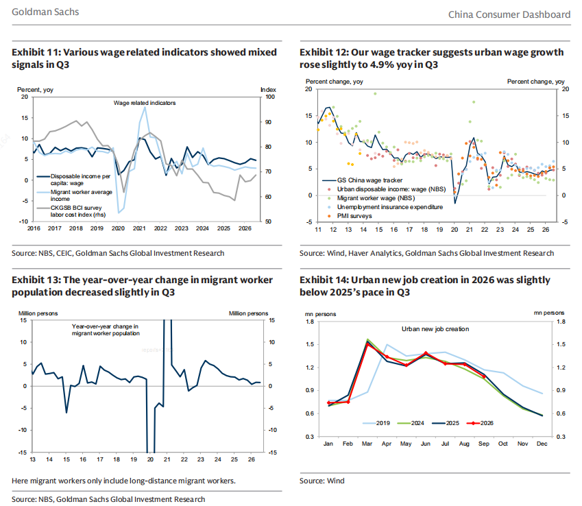
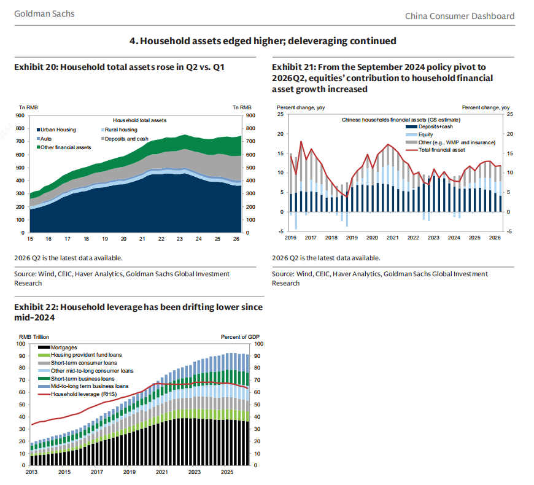
背景与关键数据
- 名义 GDP vs 实际 GDP：名义 GDP 是按当年价格算的“钱数”，实际 GDP 扣掉了价格变动。名义增速 6% 回升，可能是实际增长和物价（比如油价上涨带动的价格水平）共同作用；原文没拆分，我不替它下结论。
- “环比年化”：把本季度比上季度的增速，假设以同样速度持续四个季度折成全年数字。从 3.6% 降到 0.2%，意思是三季度消费比二季度基本没增长。
- 居民总资产 736 → 746 万亿元（+10 万亿，约 +1.4%）：资产总量在涨，但结构值得注意（见下方图 20）。
- “软数据”与“硬数据”的错位：官方就业数据（硬数据）稳定，但和客户聊出来的情绪（软数据）很悲观，还夹着“AI 抢饭碗”的担忧。这在今天的帖 5（英国青年失业）里也能看到影子。
图片解读
图是高盛《China Consumer Dashboard（中国消费者仪表盘）》的两页截图。
第 1 张（工资与就业，Exhibit 11–14）
- 图 11“工资相关指标信号混杂”：深蓝线是人均可支配收入中的工资性部分，约在 5% 左右；浅蓝线是农民工平均收入，约 3%；灰线（右轴）是 CKGSB 商业信心调查里的“劳动力成本指数”，2025 年一路走低，2026 年略有回升。
- 图 12：高盛自编的“工资追踪指数”显示，三季度城镇工资同比小幅升到 4.9%；散点是各个分项指标，整体分布在 3%–7%。对比图左侧 2011–2013 年 10% 以上、2016–2019 年约 7%–9%（目测），工资增速已经台阶式下移。
- 图 13：农民工人口的同比变化（百万人）三季度略有下降，目测只在 +1 百万人上下，说明“外出务工人口”不再快速增长。
- 图 14：2026 年城镇新增就业（红线）三季度略低于 2025 年（深蓝线）的同期节奏，更远低于 2019 年（浅蓝线）。
第 2 张（第 4 节：“居民资产小幅上升；去杠杆仍在继续”，Exhibit 20–22）
- 图 20：居民总资产（万亿元）分层堆叠：深蓝是城镇住房、浅蓝是农村住房、还有汽车、灰色是存款和现金、绿色是其他金融资产。总量在 2023 年前后见顶（约 750 万亿），2024–2025 年回落，二季度回到约 746 万亿。目测城镇住房那块深蓝从约 490 万亿的高点收缩到约 360 万亿，被存款与金融资产“补位”。
- 图 21：2024 年 9 月“政策转向”之后，居民金融资产增长里“股票”的贡献变大（浅蓝柱子）；红线是金融资产总增速，约 12%。
- 图 22：居民杠杆率（红线，右轴，占 GDP 比例）从 2023–2024 年约 68% 的高点，降到现在约 63%–64%（目测）；下面堆叠的是各类贷款余额（房贷、公积金贷款、短期消费贷、其他中长期消费贷、短期经营贷、中长期经营贷），房贷（黑色）已经从高位小幅下降，说明大家在提前还贷或不再新增。
为什么重要 / 对市场和经济的含义
- 居民可支配收入只占 GDP 的约四成多（公开统计口径约 43%–44%），经济回暖如果主要来自出口、AI 投资、价格上升，而不是居民收入，消费就跟不上。这是今天整条主线的“总判断”。
- “资产总量在涨，但房子在缩水、存款和股票在补”——居民把钱从房子挪向存款与金融资产，一方面符合“资产重配”，另一方面也说明“财富效应”（觉得自己有钱而敢花钱）变弱。
- 对市场的含义：消费板块缺乏基本面支撑，更多要看政策（以旧换新补贴、托市）；这也解释了为什么后面帖 3、帖 12 里手机和汽车都不好过。
延伸知识
- 资产负债表衰退（Richard Koo 的概念）：当资产价格暴跌、家庭企业债务相对资产过重时，大家不再“最大化利润 / 消费”，而是“最小化债务”——有钱先还债。结果是：就算利率很低，借钱消费意愿也不会回来。图 22 的“居民杠杆率下降”就是这个概念的数据版。
- 财富效应：房价涨让人觉得自己更富，会多花一点；房价跌则反过来。中国居民资产里房子占一半以上（目测），所以房价下行对消费的拖累比美国股市下跌对消费的拖累更直接。
帖 3 · 2026-10-22 12:28（美西）· 高盛：三季度手机出货同比 −30%
存储芯片涨价（背后是 AI 抢产能）让手机成本变高、售价变贵，叠加消费走弱，国内手机出货三季度同比下降约三成，厂商只好一边冲高端、一边抢存量。读全文收起
帖子原文
高盛： 第三季度中国智能手机出货量同比下降30%，远比单独看9月份的数据更加严峻。存储芯片成本上涨正在压制智能手机需求。手机厂商正在同时进行两种竞争：一方面，通过折叠屏和高端影像争取更高的单机售价；另一方面，在中低端市场争夺有限的换机需求。 #经济数据#
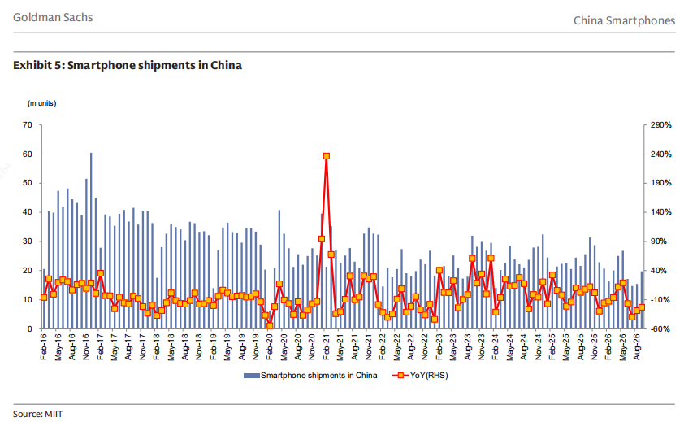
背景与关键数据
- 为什么存储芯片涨价会压住手机：手机的物料成本里，存储（运行内存 DRAM + 闪存 NAND）是重要一项。AI 服务器和数据中心大量采购高端存储，占用产能，让手机、电脑用的存储变贵。厂商要么涨价（消费者买得更少），要么压缩利润。
- -30% 同比，且“比 9 月单月更严峻”：意思是 7、8 月的同比比 9 月更差，9 月只是相对好一点，不是真正企稳。
- 高基数的可能影响（我的推测，原帖未说）：2025 年国内有“以旧换新补贴”，当年出货被明显刺激；今年补贴力度不同，同比自然更难看。
- 两种竞争：① 高端——折叠屏、更好的影像，靠提高单价（ASP）；② 中低端——大家都在争夺“愿意换机的人”这块越来越小的蛋糕。
图片解读
高盛《China Smartphones》第 5 张图。柱子（左轴，百万台）是 MIIT（工信部）统计的国内智能手机月出货量，红线（右轴）是同比增速。要点：
- 2016–2019 年大多数月份在 30–50 百万台，之后一路台阶下移，2022 年起多在 15–30 百万台。
- 2021 年 2 月同比飙到约 +240%，是疫情后的极端基数；2020 年 2 月则是疫情冲击的负值。
- 最右端（2026 年夏秋）几个月的柱子都在 15–20 百万台左右，同比降到 −20% 到 −40% 区间（目测），处在历史偏低的位置。
为什么重要 / 对市场和经济的含义
手机是最典型的“耐用品消费”。出货量大幅下滑，说明（1）居民不愿意换大件；（2）成本端涨价在传导到消费端；（3）AI 产业链的“超级周期”与消费电子形成**“一边热、一边冷”**。对 Jason 关注的存储、半导体链条来说，这是一个重要信号：AI 把存储价格推高，但存储的下游消费者（手机、PC）正在被价格压制，长期要看谁先撑不住。
延伸知识
- 挤出效应（Crowding-out）：一个需求（AI 服务器）占用了有限的产能，其他需求（手机、PC）就被“挤出去”——要么买不到，要么价格被抬高。类比：春运时高铁票被商务座和团体票抢光，普通旅客只能买贵的或买不到。
- 换机周期：消费者平均多久换一次手机。近年国内已经拉长到约 3–4 年，价格再贵一点，周期还会再拉长；厂商为了稳住收入，只能提高单价（折叠屏、高端影像），这也是原文所说的“两种竞争”。
帖 4 · 2026-10-22 12:42（美西）· 彭博：中央汇金还有多少子弹
“国家队”（中央汇金）上半年先卖出大量 ETF 回笼资金，7 月开始重新买入，目前只用掉了约 1/5，手里还有约 1,880 亿美元可以继续托市，买入方向越来越偏科技。读全文收起
帖子原文
bloomberg： 中央汇金投资有限责任公司，今年上半年通过出售交易所交易基金（ETF）筹集了2,310亿美元资金，但自7月份恢复买入以来，仅重新投入了430亿美元。这意味着中央汇金目前仍有约1,880亿美元的可动用资金。按照近期的购买速度，这笔资金足以支持约75个交易日的持续买入。托市正在进行中。 #A股#
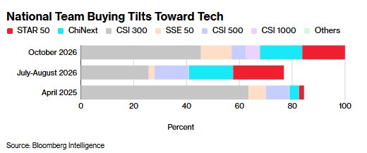
背景与关键数据
- 中央汇金：中国投资有限责任公司（CIC）旗下的全资子公司，也是常说的“国家队”核心成员，长期通过买入 ETF 在股市大跌时托底。
- 数字核对：2,310 − 430 = 1,880 亿美元，与原文一致。
- 75 个交易日：我自己倒推（估算）：1,880 ÷ 75 ≈ 每个交易日 25 亿美元；而 7 月以来 430 亿美元摊到 70–80 个交易日，日均只有 5–6 亿美元。说明“近期购买速度”明显快于 7 月以来的平均，也就是最近在加速买入。
- 买方向：从 CSI 300 这类大盘蓝筹，逐步增加到科技类（科创 50、创业板）。
图片解读
彭博情报的堆叠条形图“National Team Buying Tilts Toward Tech（国家队买盘向科技倾斜）”，横轴是占比（%）。图例：红色 STAR 50（科创 50）、青色 ChiNext（创业板）、灰色 CSI 300（沪深 300）、肉色 SSE 50（上证 50）、浅蓝 CSI 500、紫色 CSI 1000、绿色其他。三根条代表三个时期：
- 2025 年 4 月（关税冲击时期的那一轮托市）：灰色沪深 300 约占 63%，科创 50 + 创业板合计只有约 6%（目测）。
- 2026 年 7–8 月：沪深 300 降到约 26%，科创 50 + 创业板上升到约三分之一以上（约 35%，目测）。
- 2026 年 10 月：沪深 300 回到约 45%，科创 50 + 创业板仍约占三分之一（目测）。
信号：国家队的买盘风格已经从“买大盘蓝筹稳住指数”转为“同时买科技成长”，不只是为了稳指数，也有扶持科技产业的意味。
为什么重要 / 对市场和经济的含义
“托市正在进行中”是 Jason 的短评。对股票市场来说，国家队有一个“看得见的买家”，下跌空间被压缩（俗称“政策底”），但上涨幅度也未必很大；另外，当国家队开始买更多科创板、创业板这类弹性大、估值贵的股票，会增加科技板块的短期波动。此外，他们仍有 1,880 亿美元，说明这次托市“火力远未用尽”——这点和下一帖巴克莱的“mind the squeeze”可以放在一起读。
延伸知识
- 政策看跌期权（Policy Put）：投资者认为政府或央行在市场大跌时会出手托底，相当于给股市买了一份“免费保险”。美国的“Fed Put”（美联储托市）是最典型的例子；中国的版本是“国家队 Put”。保险越确定，下跌时愿意抄底的人越多，但也会引发“道德风险”（大家不再认真评估风险）。
- ETF 与托市：用 ETF 比一只只买股票更快更隐蔽，一次性买进“一篮子”成分股；这也是国家队偏爱 ETF 的原因，也是一些宽基 ETF 成交量异常放大时，市场会猜“国家队来了”的原因。
帖 5 · 2026-10-22 12:47（美西）· 彭博：英国青年失业率十年新高
英国 16–24 岁青年失业率升到 2014 年以来最高，并已超过欧盟的青年失业率；尤其是科技、金融这些原本“最好的入门岗位”里，年轻人变少了。读全文收起
帖子原文
bloomberg： 英国青年失业率升至2014年以来最高水平，英国年轻人正越来越难以进入科技、金融等高薪行业。科技和金融行业的年轻员工减少22%，自2022年底以来，18至24岁年轻人在信息与通信行业的受薪就业人数暴跌30%。 #其他国家经济#
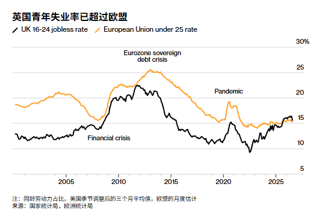
背景与关键数据
- 青年失业率：16–24 岁里“想工作、在找工作、却没有工作”的人占劳动力的比例（在校学生不算失业，也不算劳动力）。
- 数字：科技和金融行业的年轻员工 −22%；18–24 岁在信息与通信行业的受薪就业自 2022 年底以来 −30%。
- 原文没写的原因（我的推测）：常见的解释有三类——① AI 和自动化先替代“入门级、重复性”的白领任务；② 英国 2025 年起雇主社保缴费上调、最低工资上调，抬高了雇佣新人的成本；③ 经济增长偏弱，企业冻结招聘。原帖没有指出具体原因，这里只是提供思考方向。
图片解读
标题“英国青年失业率已超过欧盟”。黑线是英国 16–24 岁失业率，橙线是欧盟 25 岁以下失业率（单位：占劳动力%，右轴 5%–30%）。
- 2008 年金融危机后英国升到约 22%（图中标注 Financial crisis），欧债危机期间（Eurozone sovereign debt crisis）欧盟升到约 25%。
- 2020 年疫情（Pandemic）两条线都有一次小尖峰。
- 英国在 2022 年降到约 9% 的低点，然后一路回升到现在约 16%，欧盟则稳定在约 15%，于是出现“黑线高于橙线”——这与历史上多数时期（欧盟高于英国）相反。
- 图注：同龄劳动力占比；英国是季节调整后三个月移动平均；欧盟为月度估计。
为什么重要 / 对市场和经济的含义
和昨天报告里中国青年失业率 18% 的话题连起来看，“年轻人进不了好岗位”是主要经济体共同的新问题。长期看，这会带来“疤痕效应”：第一份工作找不到、技能和收入起点落后，影响一个人一辈子的收入曲线，也影响结婚、买房和生育（回到上周关于人口的主线）。短期看，青年人收入少，意味着消费端更弱。
延伸知识
- 疤痕效应（Scarring Effect）：长期失业或在经济衰退时毕业的人，之后几十年的平均收入会更低，因为错过了“边干边学”的窗口期。2008 年后毕业的一代人就是典型案例。
- 入门岗位（Entry-level）与 AI：很多公司过去让新人做数据整理、初稿、基础代码，同时也是培训过程。如果这些被 AI 代替，新人没了练手机会，公司几年后就缺中层人才——这被叫做“职业阶梯的第一级被抽掉了”。
帖 6 · 2026-10-22 12:51（美西）· 彭博：对冲“美债上涨”的期权变贵
美债一向被看空（10 年期收益率在 5% 左右），但这次油价暴涨 + 法国财政危机把资金赶回美债，收益率跌破 5%，原本做空的人被迫回补、期权市场也第一次出现“买上涨保险比买下跌保险更贵”。读全文收起
帖子原文
bloomberg： 周四，用于对冲美国国债进一步上涨风险的期权成本飙升至今年3月以来的最高水平。此前，油价大幅上涨、法国财政危机进一步恶化，促使投资者纷纷转向美国国债寻求避险。美国基准10年期国债收益率一个月来首次跌破5%，交易员投入数百万美元购买期权，以对冲收益率进一步下行的风险。这是七个月以来，投资者首次愿意为长期美国国债的看涨期权支付高于看跌期权的溢价。周四市场上最引人注目的交易之一，是一笔押注美国10年期国债收益率在一个月内降至约4.6%的期权头寸。美国国债还获得了另一股力量的支持：此前做空国债的投资者正在急于回补空头头寸。假设某交易员认为10年期美国国债收益率会从5%上升到5.5%，因此提前做空国债期货。结果市场突然转向避险，收益率从5%降至4.9%。国债价格上涨，做空者开始亏损。为了控制损失，他需要买入期货合约平仓。而这些买盘又会推动期货价格进一步上涨。如果大量空头同时回补，就可能出现所谓的 空头挤压（Short Squeeze）。 #金融#
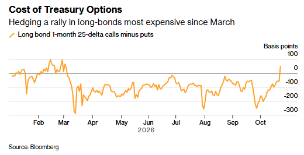
背景与关键数据
- 债券价格与收益率反着走：收益率下降 = 债券价格上涨。“对冲美债上涨风险”的人，通常是之前持有短仓（赌价格下跌）或没配置足够债券的投资者，担心价格涨得太快、自己被动亏损或踏空。
- “25-delta 看涨减看跌”（风险逆转，Risk Reversal）：delta 可以粗略理解为期权“被行权的可能性”；25-delta 是比较虚值（离现价较远）的期权。把“看涨期权的波动率”减去“看跌期权的波动率”：
- 负数：看跌期权更贵 → 市场更怕价格下跌（更怕利率上升）；
- 正数：看涨期权更贵 → 市场更怕价格上涨（更怕利率下降）。
- 本帖的重点：今年多数时间这个指标在 −100 到 −300 个基点之间（看跌贵），现在突然翻到正值，是七个月以来第一次；同时还有一笔押注 10 年期收益率一个月内降至约 4.6% 的大单。
- 空头挤压的机制：先做空的人亏钱后要买回合约平仓，买盘又推高价格，别的空头也被迫平仓，形成“越涨越买”的自我强化。
- 数字上的直观感受（我的估算）：10 年期美债久期大约在 7–8 年，收益率每下降 10 个基点（0.1%），价格大约涨 0.7%–0.8%——所以从 5% 到 4.6% 就是约 3% 的价格涨幅，对杠杆做空者的冲击很大。
图片解读
彭博图“Cost of Treasury Options（美债期权成本）”，副标题是“对冲长债上涨的成本自三月以来最贵”。纵轴单位是基点（−300 到 100），横轴是 2026 年 2 月到 10 月；线是“长债 1 个月 25-delta 看涨减看跌”。
- 2 月至 3 月初曾短暂在 0 附近甚至为正（约 +80），3 月初被急跌至约 −300（市场极度怕价格下跌）。
- 4 月到 9 月大多在 −100 到 −250，其中 8 月和 10 月初又各有一次短暂探底到约 −280。
- 最右端（10 月下旬）线陡然上扬，冲到零线以上（约 +30），对应帖子里“七个月来第一次”。
为什么重要 / 对市场和经济的含义
美债 10 年期收益率是全球资产的“定价锚”：房贷、公司债、股票估值都以它为基准。收益率停在 5% 附近，意味着全球资金成本很高；它一旦快速下行，股票估值压力会缓解，但背后是“避险情绪”的代价。这里有个有趣的矛盾：油价上涨本来会推高通胀预期、让债券收益率上升，但这次市场更关心“油价冲击增长和地缘风险”，债券反而成了避风港。到底哪种逻辑占上风，要看后续通胀数据和美联储的反应。与帖 10（美伊战争预期）连起来读：如果战争预期继续升温，这股“避险买债”的力量可能延续。
延伸知识
- 偏斜（Skew）与风险逆转：期权价格不仅反映“波动多大”，也反映“往哪个方向更怕”。股票市场通常是看跌期权更贵（怕暴跌）；而此处美债的看涨期权变贵，代表市场开始怕“利率大跌”（衰退或危机）。
- “避险资产的悖论”：美债既是全球资金的避风港（危机时被买），又被财政赤字担忧压制（供给太多时被抛）。投资者要同时问两个问题：“现在的风险来自通胀/财政，还是来自增长/地缘？”答案不同，美债的走势完全不同。
帖 7 · 2026-10-22 12:55（美西）· 彭博：新西兰通胀小幅回落，但可能仍加息
新西兰“总通胀”降了（3.7%，略好于预期），但“核心通胀”还在上升，所以央行下周仍很可能加息 25 个基点（市场定价 83%）。读全文收起
帖子原文
bloomberg： 新西兰第三季度年度通胀率下降幅度超过市场预期，（CPI）同比上涨3.7%，低于第二季度的4.1%，也低于经济学家此前预测的3.8%。对货币政策较为敏感的新西兰两年期政府债券收益率下降2个基点，至3.9%。不过，物价压力的暂时缓解可能不会持续太久。第三季度多项核心通胀指标有所上升。这一情况可能加大央行的加息压力，促使其最早在10月28日的下一次货币政策会议上，将官方现金利率（OCR）提高至3%。互换市场数据显示，通胀报告公布后，市场对下周加息25个基点的定价概率升至83%。 #其他国家经济#
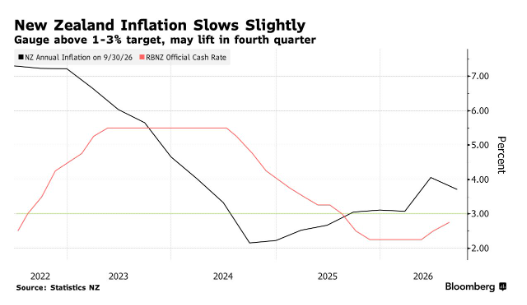
背景与关键数据
- 总通胀 vs 核心通胀：总通胀（headline CPI）包括能源、食品这些波动大的项目；核心通胀去掉（或平滑）了这些波动，更能反映价格上涨的“底色”。央行看的主要是核心，因为核心上升说明涨价已经扩散到各种商品和服务，会形成“第二轮效应”（工资和租金跟着涨）。
- OCR（Official Cash Rate，官方现金利率）：新西兰央行（RBNZ）的政策利率。图里显示目前约 2.75%，加息 25 个基点（0.25 个百分点）后到 3%。
- 互换市场定价 83%：利率互换（OIS）价格里隐含着市场对下次会议加息的押注。约 83% × 25 个基点 ≈ 市场预期的加息幅度 21 个基点（我的简单估算）。
- 两年期国债收益率 3.9%，明显高于现行 2.75% 的政策利率，说明市场已经预期未来还会不止加一次息。
图片解读
彭博图“New Zealand Inflation Slows Slightly（新西兰通胀小幅放缓）”，副标题“指标仍高于 1–3% 目标区间，第四季度可能上调”。黑线是新西兰年度通胀率，红线是 RBNZ 的官方现金利率；横线（3%）是通胀目标区间的上沿。
- 通胀：2022 年约 7%+ 的峰值，一路降到 2024 年上半年约 2.2% 的低点，2025 年回升到约 3%，2026 年上半年继续抬到约 4.1%，三季度回落到 3.7%（但仍高于 3% 的上沿）。
- 政策利率：2023 年到 2024 年中长期维持约 5.5% 的高位，之后一路降息到 2025 年下半年的约 2.25%，2026 年重新小幅抬升到约 2.75%。
- 信号：利率刚从低点抬头，通胀却仍高于目标，央行需要继续收紧。
为什么重要 / 对市场和经济的含义
这条消息和帖 6 一起读：全球央行并不是同一个方向。美国长债收益率在 5% 附近往下走；新西兰这种小型开放经济体则因为油价、进口价格和核心通胀上升，仍然需要加息。它也提示：油价冲击带来的通胀并不只是“一次性”的，如果传导到核心，央行就得继续紧缩。对比中国：中国面临的是“通缩压力 + 消费弱”，利率走的是相反的方向（昨天报告里 10 年期国债收益率约 1.6%），说明同一个全球油价冲击，在不同经济体里的后果差异很大。
延伸知识
- 泰勒规则（Taylor Rule）的直觉：央行的政策利率大致应该随通胀和产出缺口调整：通胀高于目标时提高利率，增长太弱时降低利率。新西兰当前的组合是“通胀偏高 + 增长一般”，所以倾向加息。
- 为什么总通胀下降央行还加息：因为央行“向前看”。总通胀可能被一次性因素（比如汽油价格回落）拉低，而核心通胀与工资、租金这些粘性强的项目有关，更能预示未来 1–2 年的通胀走势。
帖 8 · 2026-10-22 12:58（美西）· 彭博：恒大清盘人近三年只追回不到 1%
恒大被法院清盘近三年，清盘人到 2026 年 9 月底累计变现约 34 亿港元（约 4.36 亿美元），相对于 460 亿美元的债权人索赔，回收率不到 1%。读全文收起
帖子原文
bloomberg： 中国恒大集团启动清盘程序已近三年，但清盘人至今追回的资产，仍不足债权人索赔总额460亿美元的1%。法院委任的清盘人首次公布了详细的资产回收明细，包括出售飞机、艺术品以及俱乐部会员资格等资产所取得的款项。清盘人还对恒大在2013年至2016年间，向一所未公开名称的美国大学支付的约12亿港元提出质疑。此外，2020年初，恒大曾与一家中国研究机构共同向该大学承诺提供一笔1,430万美元的covid研究资助。 #金融#
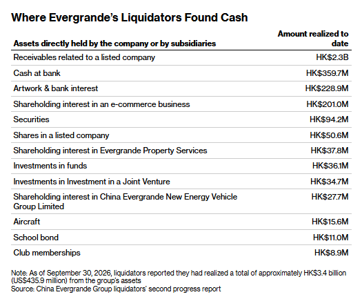
背景与关键数据
- 清盘 vs 重组：重组是“债务减免 + 继续经营”，清盘是“变卖资产、按顺序还债，公司最终消失”。恒大 2024 年初被香港法院下令清盘（原文说“已近三年”）。
- 回收率：435.9 百万美元 ÷ 46,000 百万美元 ≈ 0.95%（我自己算）。也就是说每 100 美元债权，目前只收回不到 1 美元。
- 清盘人的另一件事：追查可疑付款：对恒大 2013–2016 年向一所未公开名称的美国大学支付的约 12 亿港元提出质疑，同时 2020 年初曾与一家中国研究机构共同承诺该大学 1,430 万美元的 COVID 研究资助。这类调查叫“追回”或“撤销不当交易”，目标是把清盘前流出的钱再追回来。
图片解读
表格标题“Where Evergrande's Liquidators Found Cash（恒大清盘人在哪里找到了钱）”，列出“公司或其子公司直接持有的资产”及“截至目前已变现金额”（单位：HK$）：
| 项目 | 已变现金额 |
|---|---|
| 与一家上市公司相关的应收款 | 23 亿 |
| 银行现金 | 3.597 亿 |
| 艺术品与银行利息 | 2.289 亿 |
| 一家电商企业的股权 | 2.010 亿 |
| 证券 | 9,420 万 |
| 一家上市公司的股份 | 5,060 万 |
| 恒大物业股权 | 3,780 万 |
| 基金投资 | 3,610 万 |
| 合营企业投资 | 3,470 万 |
| 恒大新能源汽车集团股权 | 2,770 万 |
| 飞机 | 1,560 万 |
| 学校债券 | 1,100 万 |
| 俱乐部会籍 | 890 万 |
图注：截至 2026 年 9 月 30 日，清盘人称累计变现约 HK$34 亿（约 US$4.359 亿）。我把表里的数字加了一遍，约 HK$34.06 亿，和图注一致；其中“与上市公司相关的应收款”一项就占约三分之二（23 ÷ 34 ≈ 68%，我的计算），也就是说，剩下的“实物资产”（飞机、艺术品、会籍）加起来金额很小。
为什么重要 / 对市场和经济的含义
恒大是中国房地产债务危机的“起点”。这个数字说明：境外债权人在中国房企的违约中，最后能拿到的钱极少——这对中资房企的海外债融资意愿、风险溢价、以及“中国资产”的信用评级都是长期负面信息。也提醒国内购房者和投资者：房企资产的“账面价值”和“清盘变现价值”可能差很多。
延伸知识
- 清偿顺序（Waterfall）：清盘时变卖所得的钱要按顺序分——先付清盘费用和有担保债权人、再付优先债权、最后才轮到普通无担保债权人和股东。离岸债券持有人通常排在后面，所以最容易“颗粒无收”。
- 回收率（Recovery Rate）：评估债券风险时，不仅看违约概率，还要看违约后能收回多少。一般企业债的平均回收率大约在三到四成；恒大不到 1%，意味着“违约 + 资产难处置 + 跨境追偿”叠加后的极端情形。
帖 9 · 2026-10-22 13:05（美西）· 巴克莱：我们并不看好基本面，但小心被“逼空”
巴克莱衍生品策略团队的观点是：中国的基本面依然谨慎，但“空头太拥挤 + 期权便宜 + 上行偏斜昂贵”这三件事凑在一起，使得“向上被逼空”成为一个值得布局的交易。读全文收起
帖子原文
巴克莱： 我们并不看好基本面，但mind squeeze #股市#
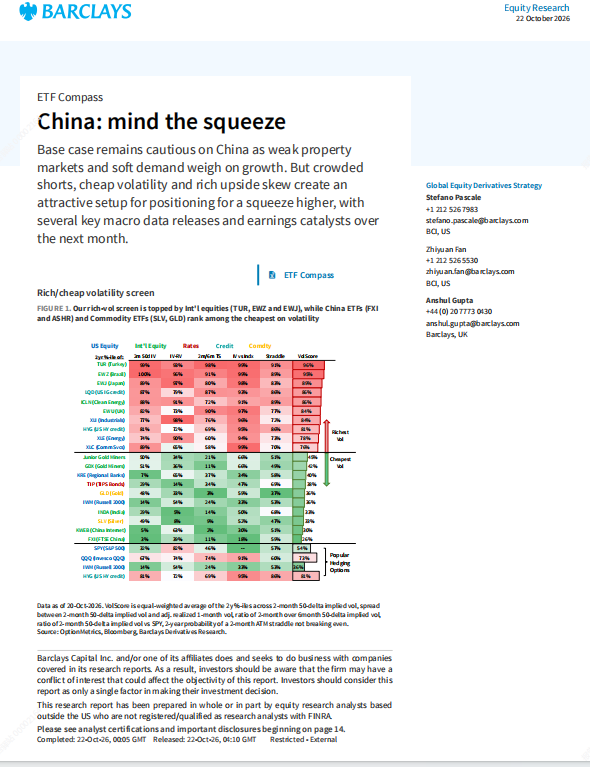
（本帖带 1 个 PDF 文件附件：《China_ mind the squeeze.pdf》，约 2.3 MB。我没有下载文件，只能读到帖子里的封面截图，下面的解读基于这一页。）
背景与关键数据
封面（2026 年 10 月 22 日发布，作者 Stefano Pascale、Zhiyuan Fan、Anshul Gupta，巴克莱全球股票衍生品策略团队）的摘要大意（我翻译）：
基本情形仍对中国保持谨慎，因为房地产疲软、需求偏弱拖累增长。但是，拥挤的空头仓位、便宜的波动率和昂贵的上行偏斜，构成了一个适合“押注向上挤压”的布局，未来一个月里有多项重要的宏观数据和财报催化剂。
- 逼空（Squeeze）：很多人都在做空，价格一旦出现意外上涨，空头被迫买回平仓，买盘又把价格推得更高（与帖 6 里的美债空头回补是同一个机制）。
- 便宜的波动率（Cheap Vol）：期权价格主要由隐含波动率决定；波动率“便宜”意味着期权便宜，买期权的成本低。
- “昂贵的上行偏斜”（Rich Upside Skew）：这个说法我不能完全确定意思（PDF 正文没读）；一种可能的解读是上涨方向的期权相对于下跌方向并不便宜，说明市场已经在为“向上冲”定价。仅供参考。
图片解读
图 1：“我们的波动率贵 / 便宜筛选”，是一张彩色热力表，每一行是一个 ETF，列是不同维度（美股 / 国际股票 / 利率 / 信用 / 大宗商品）的两年分位数，最右一列“VolScore”是综合得分，越红越贵、越绿越便宜。
- 表头说明：国际股票类（TUR 土耳其、EWZ 巴西、EWJ 日本）排在“最贵”一端，得分都在 90% 左右。
- 中国相关 ETF（FXI、ASHR）以及大宗商品 ETF（SLV 白银、GLD 黄金）位于“最便宜”的一端（目测综合得分在两三成的位置）。
- 脚注：数据截至 2026 年 10 月 20 日；VolScore 是五项指标的两年分位数的等权平均，包括 2 个月隐含波动率、隐含与已实现波动率的差、2 个月 / 6 个月期限结构比、相对 SPY 的隐含波动率比，以及“两个月平价跨式组合不赚钱”的两年概率。
为什么重要 / 对市场和经济的含义
结合帖 4（国家队还有 1,880 亿美元弹药）一起看：基本面偏弱 + 政策托底 + 空头拥挤，往往是“利空出尽之后的快速反弹”的配方。这并不是看多基本面（正如巴克莱和 Jason 一再强调的“并不看好基本面”），而是“仓位和价格”层面的判断：好消息不需要很多，只要比预期少一点坏，就能让空头被迫回补。对读者的启发：不要把“基本面差”直接等同于“股价一定跌”，市场交易的是“预期差”和“仓位拥挤度”。
延伸知识
- 逼空与“拥挤交易”：当太多人做同一个方向的交易时，哪怕只有很小的反向刺激，也会引起踩踏。2021 年的 GameStop 事件就是一个极端案例。判断拥挤度常看：空头占流通股比例、融券余额、基金仓位调查、期权偏斜等。
- 隐含波动率与已实现波动率：隐含波动率是期权价格里隐含的“市场预期的未来波动”，已实现波动率是过去真实发生的波动。隐含波动率比已实现便宜，意味着买期权“划算”；巴克莱筛选的就是“期权贵不贵”。
帖 10 · 2026-10-22 13:41（美西）· ZeroHedge：美伊动态
据报道，美以可能在 11 月 3 日美国中期选举之后再对伊朗发动一轮约三天的密集空袭；与此同时，特朗普指责伊朗在选前人为推高油价，而高盛的数据显示波斯湾石油出口已基本恢复到战前水平。读全文收起
帖子原文
zerohedge： 美伊动态 #其他国家经济#
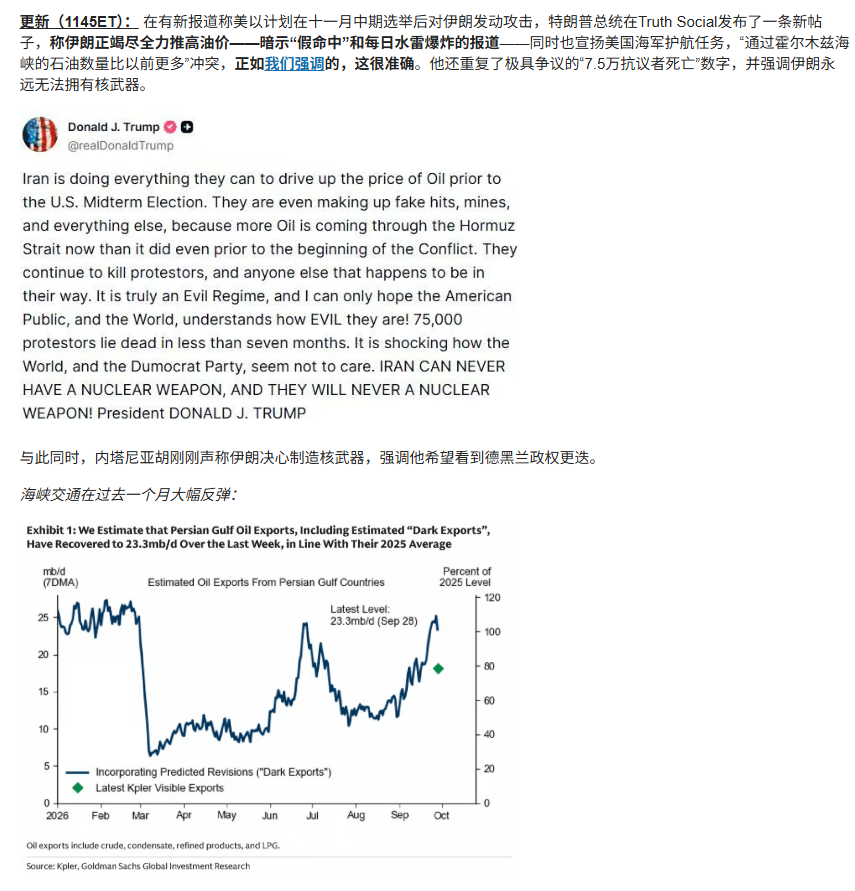
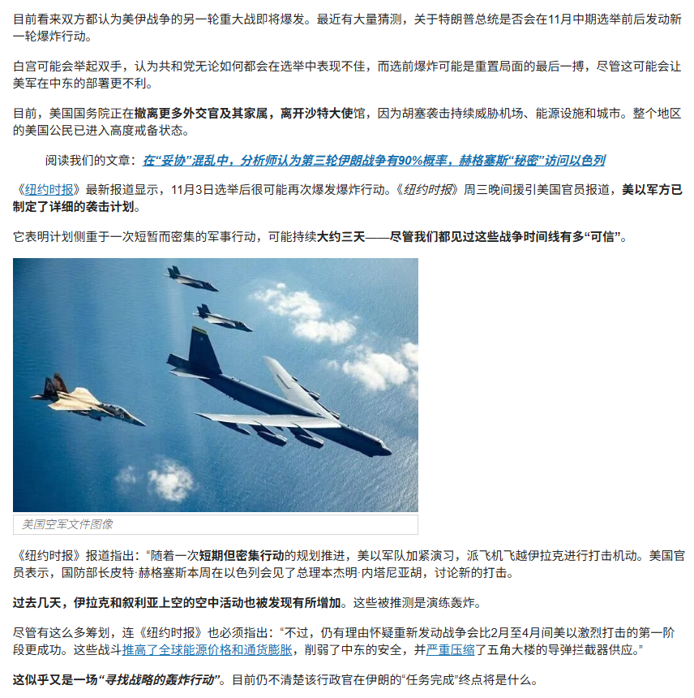
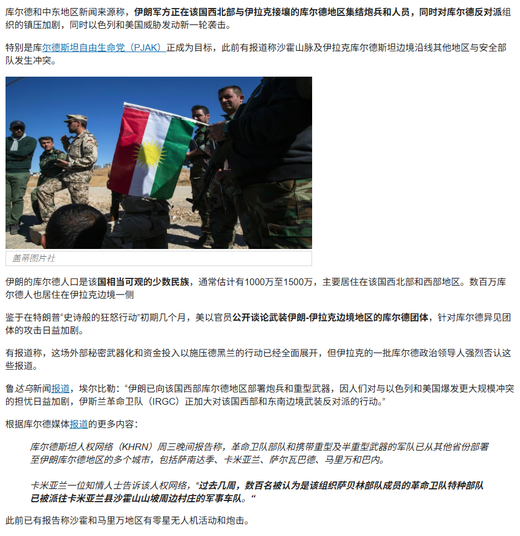
（三张图是 ZeroHedge 一篇文章的连续截图，带中文翻译。以下是我对截图里内容的转述。ZeroHedge 是观点鲜明的财经博客，文中引用的美国媒体报道也是转述，请把这些内容当作“有来源的传闻 / 观点”，不是已确认事实。）
背景与关键数据
图 1（更新 11:45 ET + 高盛图）
- 有新报道称美以计划在 11 月中旬选举后对伊朗发动攻击；特朗普在 Truth Social 上发帖说，伊朗在“尽一切努力”推高选前油价——编造“假命中”“水雷爆炸”的报道——而事实上经过霍尔木兹海峡的石油“比冲突开始之前还多”；他还提到美国海军护航任务，并再次强调伊朗绝不能拥有核武器，重复了“7.5 万抗议者死亡”这个文章自己也称“极具争议”的数字。
- 同时，内塔尼亚胡称伊朗决心制造核武器，并希望看到德黑兰政权更迭。
图 2（文章接续）
- 双方都认为新一轮重大战事即将爆发；有猜测称特朗普可能在 11 月中期选举前后发动新一轮轰炸，白宫或许认为共和党选情不乐观，选前开战可能是“重置局面的最后一搏”，尽管这可能对美军在中东的部署不利。
- 美国国务院正在撤离更多外交官及其家属，离开沙特大使馆，因为胡塞武装的袭击持续威胁机场、能源设施和城市；整个地区的美国公民已进入高度戒备。
- 《纽约时报》援引美国官员说，美以军方已制定详细的袭击计划，是一次短暂而密集的行动，可能持续约三天；美军也在加紧演练（如飞越伊拉克打击的机动），国防部长赫格塞斯本周与以色列总理内塔尼亚胡会面讨论新的打击。
- 但《纽约时报》自己也指出：重新开战未必比 2–4 月间的第一阶段更成功。上一轮战争“推高了全球能源价格和通胀、削弱了中东安全、严重压缩了五角大楼的导弹拦截器供应”。
- ZeroHedge 引用自己的另一篇文章：分析师认为第三轮伊朗战争的概率为 90%（这是它的说法，我无法核实）。
图 3（库尔德线）
- 库尔德方面报道称，伊朗军方正在西北部与伊拉克接壤的库尔德地区集结炮兵和人员，同时加紧镇压反对派组织，主要目标之一是库尔德斯坦自由生命党（PJAK）。
- 伊朗库尔德人口约 1,000–1,500 万；文章说美以官员曾公开谈及武装伊朗—伊拉克边境库尔德团体，但伊拉克库尔德领导人否认。
- 库尔德媒体称，革命卫队携带重型和半重型武器进驻多座城市（萨南达季、卡米亚兰、萨尔瓦德、马里万、巴内等），并有零星的无人机活动和炮击。
图片解读
图 1 里的高盛图（Exhibit 1）：“我们估计包括‘暗出口’在内的波斯湾石油出口，已在上周回升到 2025 年平均水平，约 23.3 百万桶/日”。
- 横轴 2026 年 1 月到 10 月，纵轴左为百万桶/日，右为占 2025 年平均水平的百分比。
- 1–2 月出口约 25–27；3 月初断崖式跌到约 6.5（对应霍尔木兹海峡受阻 / 战争爆发）；4–6 月在 7–10 之间；7 月初冲到约 24；7–8 月又回落到约 10–12；从 8 月下旬开始稳步回升，9 月底到约 25，最新值（9 月 28 日）23.3。
- 绿色菱形是 Kpler 的“可见出口”（船舶追踪能看到的部分），约为 2025 年水平的 80%。两者之间的差距，就是高盛估算的“暗出口”（关闭定位系统的暗船队运输）。
- 我读图的补充（推测）：用高盛口径看，恢复到约 100% 的 2025 年平均，但仍略低于战前 1–2 月的 25–27；用可见出口看更是只有 80%。所以特朗普说“比冲突之前还多”，与这张图并不完全吻合（需要注意：这张图的最新数据是 9 月 28 日，距帖子发布约三周，之后的变化图里看不到）。
为什么重要 / 对市场和经济的含义
油价是今天好几条主线的共同变量：帖 6（美债避险）、帖 7（新西兰核心通胀）、帖 12（高油价拖累汽车销售预期）。“第三轮战争”的预期 会推高油价的“风险溢价”，对全球来说是通胀上行 + 增长下行（滞胀）的组合；对美国来说，选举前后的政策节奏也是政治事件。对投资者而言，要提防“新闻标题冲击油价，实物出口并没有明显变化”的反复。
延伸知识
- 霍尔木兹海峡：连接波斯湾和阿拉伯海的狭窄水道，全球大约五分之一的石油消费要经过这里（美国能源信息署的常用口径），因此它一出事，油价就先涨“风险溢价”，实际供应中断反而是后话。
- 暗船队与“暗出口”：为了规避制裁，一部分油轮会关闭自动识别系统（AIS）或频繁换旗，卫星和船舶追踪公司（如 Kpler）看不全，所以出现“可见出口”和“估算总出口”的差别。分析时要先问清楚“这个数字包含了暗出口吗”。
帖 11 · 2026-10-22 13:55（美西）· 易居：上海二手房 9 月成交价
上海二手房 9 月成交均价环比小涨 1.6%、同比 −3.7%，“同比跌幅在收窄”，但 1–9 月累计均价同比仍 −11.4%，市场仍是“结构性分化”。读全文收起
帖子原文
易居： 9月，上海二手住宅成交均价36014元/平方米，环比上涨1.6%，同比下降3.7%。1-9月，上海二手住宅成交均价35636元/平方米，同比下降11.4%。在828现房销售政策推出后，上海落地细则在9月底出台，对本月房地产市场的影响有限，因此市场延续结构性分化运行格局。 #房价#
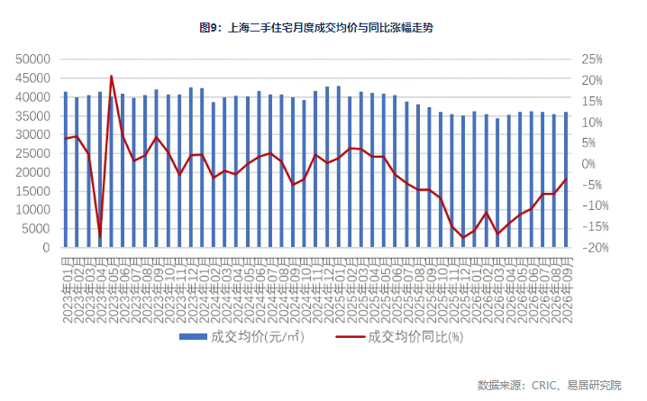
背景与关键数据
- 环比 vs 同比：环比是跟上个月比，同比是跟去年同月比。环比 +1.6%、同比 −3.7%，说明“比上个月好一点，但还没回到去年水平”。
- 同比降幅缩窄不等于价格大涨：我的推测是“基数效应”——去年同期的价格已经降过一轮，今年继续横着走，同比数字就自然“变好看”。
- “828 现房销售政策”：帖子没有展开。从字面理解是 8 月 28 日出台的、与“现房销售”（卖已经建好的房子，而不是先预售再建）相关的政策，上海的细则 9 月底才落地，所以对 9 月市场影响有限。具体条款我无法从帖子里确认。
- “结构性分化”：好地段、好品质房子的价格相对稳定，边缘区域、老旧房源下跌更多。
图片解读
图 9“上海二手住宅月度成交价与同比涨幅走势”（数据来源 CRIC、易居研究院）。横轴 2023 年 1 月至 2026 年 9 月，蓝色柱子（左轴，元/㎡）是月度成交均价，红线（右轴）是同比涨幅。
- 柱子：2023 年到 2025 年上半年多在 4 万元/㎡ 上下；2025 年下半年起降到约 3.5 万；2026 年一直在 3.4–3.6 万之间徘徊，9 月 3.6 万。
- 红线：2023 年 4–5 月有一次一跌一涨的尖峰（我推测是基数 / 口径效应）；2024 年底到 2025 年同比逐月转负，2025 年底至 2026 年初跌到约 −17%，之后一路收窄，9 月约 −3.7%。
- 信号：价格“水平”已经几乎横着走了 8–9 个月（约 3.5 万），所谓“同比好转”主要是低基数。
为什么重要 / 对市场和经济的含义
和帖 1 北京的数据对比：北京三季度成交价同比 −11.8%，上海 9 月单月同比 −3.7%——但两者并不完全可比（一个是季度均值，一个是单月；统计机构和口径也不同，平均价还会受“这个月成交了哪些类型的房子”影响）。比较稳妥的结论是：北京的折价率在扩大、上海的价格在筑平台，两个一线城市都还没有出现“价格反转”。
延伸知识
- 基数效应（Base Effect）：同比增速 = 今年 ÷ 去年 − 1。去年的数低，今年同比自然好看；去年的数高，今年同比自然难看。所以判断趋势，不仅要看同比，也要看环比和水平值。
- 结构效应（Composition Effect）：平均成交价不是“同一套房子的价格”。如果某月成交里高价豪宅占比高，均价就会被拉高，哪怕每套房实际都在降价。所以统计局和机构也会编“同质房价指数”（比如重复交易法）来剔除这种影响。
帖 12 · 2026-10-22 13:58（美西）· 乘联会崔东树：9 月末乘用车库存 321 万辆
乘用车行业库存在 3 个季度里一直在 310–350 万辆徘徊，9 月末 321 万辆；业内对 10 月的预期继续变谨慎（乐观度从 38% 降到 23%），主要原因是高油价冲击消费，库存消化压力仍然不小。读全文收起
帖子原文
乘联会崔东树： 9月末全国乘用车行业库存321万辆，环比上月增7万辆，同比2025年9月下降7万辆，形成3季度库存持续徘徊的特征。根据厂家内部人员的预测汇总测算，乘联分会预测团队2025年初以来对市场预测很乐观，逐步悲观，预测团队2025年1-9月对市场预测很乐观，2025年10月开始满意度持续暴跌到低位。2026年9月乐观度38%，10月初的9月月后满意度为19%，预期低但满意度也差，主要是高油价的冲击太大。由于市场持续低于预期，调整了大家的接受度，团队对10月市场的乐观度降到23%，这是近3个月市场乐观度判断的中性预测指数，但低于9月的38%，体现大家更谨慎了。从目前的321万辆的库存水平和预期的到未来几个月的市场增长的判断，行业库存消化压力仍较大。鉴于目前销量持续低于预期的现状，车企需及时跟踪政策环境与市场变化，谨慎设定产销节奏，根据经销商库存结构，谨慎增加库存，及时清理历史库存。 #经济数据#
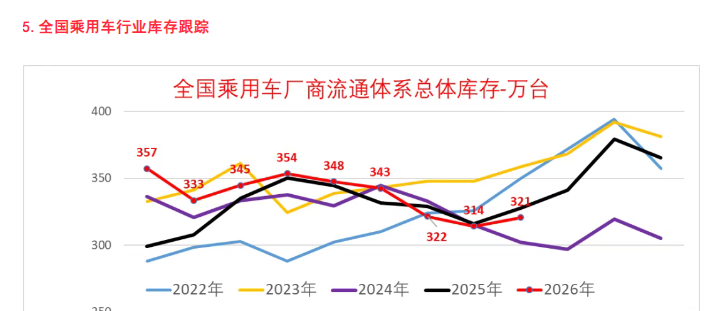
（原文中间有几句表述不通顺，疑似转写或原稿的错字，我按字面照抄；可靠的数字是：9 月乐观度 38%、10 月初对 9 月的满意度 19%、10 月乐观度 23%。）
背景与关键数据
- 库存口径：“全国乘用车厂商流通体系总体库存”，也就是厂家仓库里的整车 + 经销商店里和中转路上的整车，是衡量“车卖不卖得动”的重要指标。
- 数字：9 月末 321 万辆，环比 +7 万、同比 −7 万（说明比去年同期的库存还低一点，但销量也更弱）。
- 乐观度 / 满意度：乘联会定期对厂家内部人员做问卷，类似“景气指数”的思路：乐观度（对未来的预期）从 9 月的 38% 降到 10 月的 23%；对 9 月实际表现的“满意度”只有 19%，也就是业内人士觉得“比预期还差”。
- 高油价：原文把它列为首要原因。我的推测：高油价对燃油车使用成本冲击更大，同时压低整体消费信心；新能源车可能受益，但总体需求被拖累。
图片解读
“全国乘用车厂商流通体系总体库存（万台）”折线图，横轴是 1–12 月，每条线是一年（2022 蓝、2023 黄、2024 紫、2025 黑、2026 红）。
- 2026 年红线逐月标注：1 月 357、2 月 333、3 月 345、4 月 354、5 月 348、6 月 343、7 月 322、8 月 314、9 月 321（万台）。
- 2025 年黑线 9 月约 328，对应帖子里“同比 −7 万”（328 − 321 = 7，我核对后吻合）；图的右侧能看到 2025 年末（11–12 月）库存冲到 365–380 万的高位。
- 对比去年（目测黑线）：2026 年 1–6 月库存都高于 2025 年同期（比如 1 月 357 vs 约 300），7 月起才略低于去年同期，所以“同比 −7 万”其实是下半年才出现的变化。
- 信号：2025 年四季度出现过“年底冲库存”的季节性抬升，如果今年 10–12 月销量不及预期，库存可能又要被推高，这正是原文所说“谨慎增加库存、及时清理历史库存”的原因。
为什么重要 / 对市场和经济的含义
汽车是中国制造业和居民耐用品消费的“大头”。库存高、乐观度低，意味着价格战、减产、压货款都有可能继续发生；对上游（钢、电池、零部件）、对地方就业、对银行（经销商贷款）都有传导。和帖 2（居民消费环比 0.2%）、帖 3（手机 −30%）放在一起：房子、手机、汽车这三大件，今天同时亮起黄灯。
延伸知识
- 库存周期（Inventory Cycle）：企业在需求好的时候增加库存，需求变差时发现库存太多、减少生产，从而放大经济的波动。经济学家常用“库存 ÷ 销量”判断周期阶段：库存多、销量弱，说明还处在“被动去库存”阶段，需要时间消化。
- 景气 / 扩散指数：乘联会的“乐观度”类似于 PMI 的思路——问一批业内人士“你觉得下个月会更好、持平还是更差”，把“更好”的比例做成指数。它是软数据，领先于实际销量的变化，但也会受情绪放大。
今日全图索引
| 帖号 | 时间（美西） | 主题 | 标签 | 图片文件名 |
|---|---|---|---|---|
| 帖 1 | 10-22 12:01 | 普睿：北京二手房以价换量，折价率 80.2% | #房价# | post1_img1.png |
| 帖 2 | 10-22 12:21 | 高盛：居民消费几乎停滞、家庭去杠杆 | #经济数据# | post2_img1.png, post2_img2.png |
| 帖 3 | 10-22 12:28 | 高盛：三季度中国手机出货 −30% | #经济数据# | post3_img1.png |
| 帖 4 | 10-22 12:42 | 彭博：中央汇金还有约 1,880 亿美元可托市 | #A股# | post4_img1.png |
| 帖 5 | 10-22 12:47 | 彭博：英国青年失业率十年新高 | #其他国家经济# | post5_img1.png |
| 帖 6 | 10-22 12:51 | 彭博：美债“看涨期权”变贵、空头回补 | #金融# | post6_img1.png |
| 帖 7 | 10-22 12:55 | 彭博：新西兰通胀 3.7%，仍可能加息 | #其他国家经济# | post7_img1.png |
| 帖 8 | 10-22 12:58 | 彭博：恒大清盘人回收不足 1% | #金融# | post8_img1.png |
| 帖 9 | 10-22 13:05 | 巴克莱：基本面不看好，但 mind the squeeze（含 PDF 附件） | #股市# | post9_img1.png |
| 帖 10 | 10-22 13:41 | ZeroHedge：美伊动态（第三轮战争预期） | #其他国家经济# | post10_img1.png, post10_img2.png, post10_img3.png |
| 帖 11 | 10-22 13:55 | 易居：上海二手房 9 月成交价 | #房价# | post11_img1.png |
| 帖 12 | 10-22 13:58 | 乘联会：9 月末乘用车库存 321 万辆 | #经济数据# | post12_img1.png |